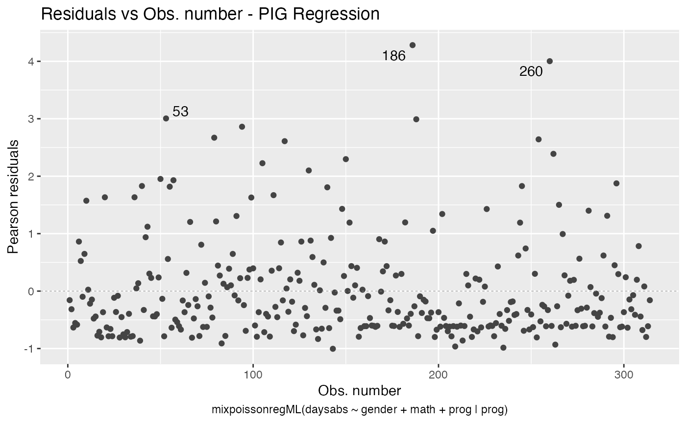
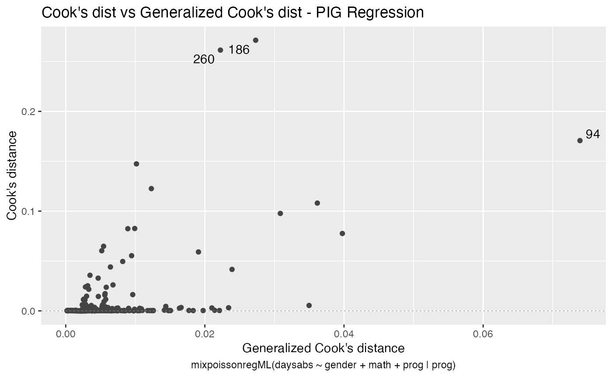
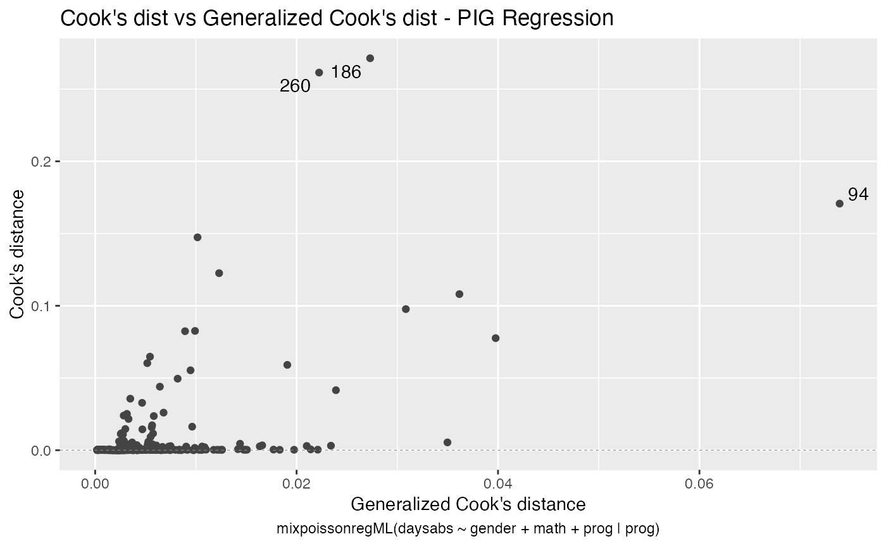
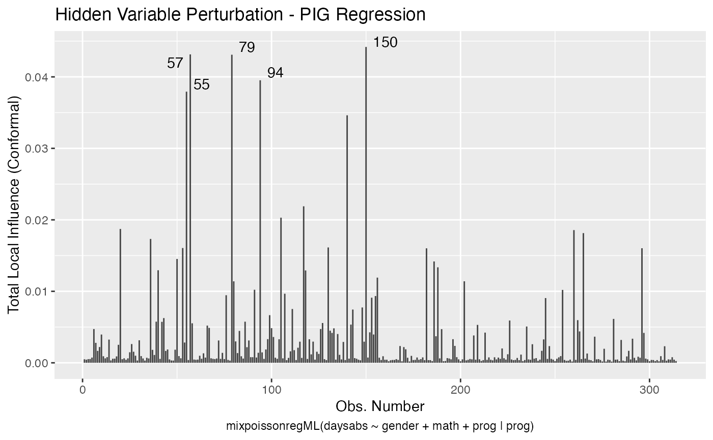
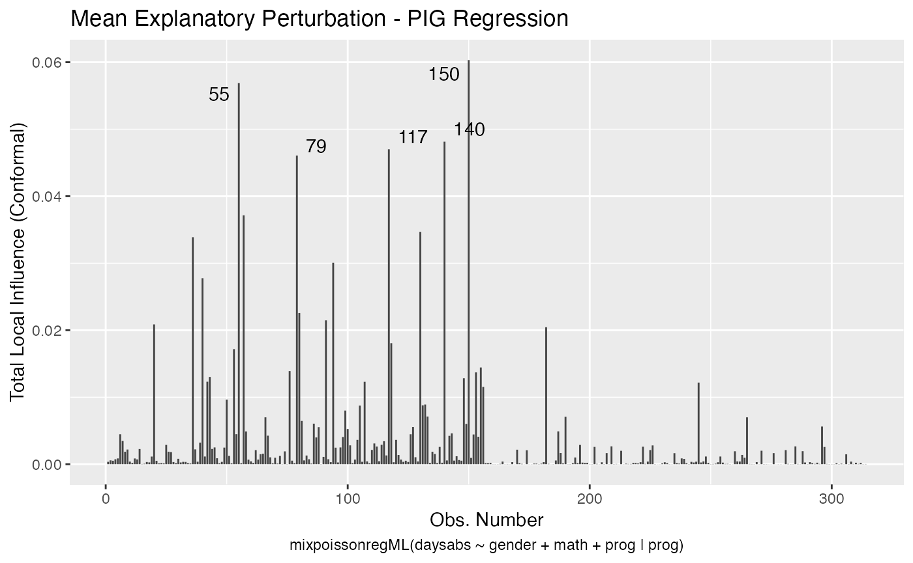
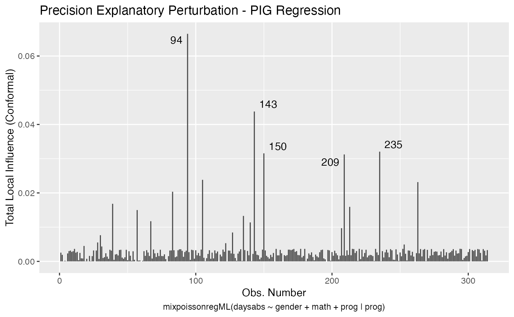
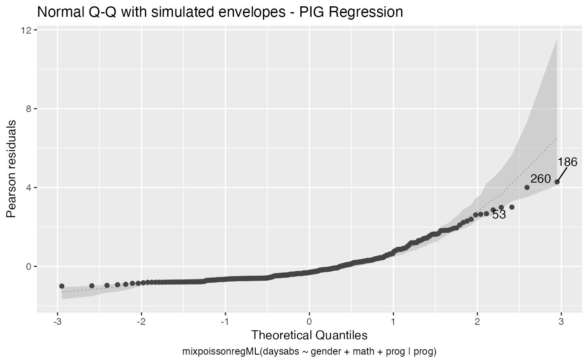

Maximum-likelihood estimation with the mixpoissonreg package
Alexandre B. Simas
2021-02-24
Source:vignettes/ml-mixpoissonreg.Rmd
ml-mixpoissonreg.Rmd
Fitting mixpoissonreg models via direct maximization of the likelihood function
In the mixpoissonreg package one can easily obtain estimates for the parameters of the model through direct maximization of likelihood function. This estimation procedure has the advantage of being very fast, so we recommend this estimation as an alternative when the EM-algorithm takes too long to converge. We use very good initial guesses using the gamlss function from the gamlss package.
One can obtain parameters estimates through direct maximization of the likelihood function by setting the method argument to “ML”:
library(mixpoissonreg)
fit_ml <- mixpoissonreg(daysabs ~ gender + math + prog, method = "ML",
data = Attendance)
summary(fit_ml)
#>
#> Negative Binomial Regression - Maximum-Likelihood Estimation
#>
#> Call:
#> mixpoissonreg(formula = daysabs ~ gender + math + prog, data = Attendance,
#> method = "ML")
#>
#>
#> Pearson residuals:
#> RSS Min 1Q Median 3Q Max
#> 345.7857 -0.9662 -0.7356 -0.3351 0.3132 5.5512
#>
#> Coefficients modeling the mean (with link):
#> Estimate Std.error z-value Pr(>|z|)
#> (Intercept) 2.707564 0.203069 13.333 < 2e-16 ***
#> gendermale -0.211066 0.122373 -1.725 0.0846 .
#> math -0.006235 0.002491 -2.503 0.0123 *
#> progAcademic -0.424576 0.181772 -2.336 0.0195 *
#> progVocational -1.252813 0.201381 -6.221 4.94e-10 ***
#>
#> Coefficients modeling the precision (with link):
#> Estimate Std.error z-value Pr(>|z|)
#> (Intercept) 1.0473 0.1082 9.675 <2e-16 ***
#> ---
#> Signif. codes: 0 '***' 0.001 '**' 0.01 '*' 0.05 '.' 0.1 ' ' 1
#>
#> Efron's pseudo R-squared: 0.1854615
#> Number of function calls by 'optim' = 4These estimates can also be obtained by using the mixpoissonregML function:
fit_ml2 <- mixpoissonregML(daysabs ~ gender + math + prog,
data = Attendance)
summary(fit_ml2)
#>
#> Negative Binomial Regression - Maximum-Likelihood Estimation
#>
#> Call:
#> mixpoissonregML(formula = daysabs ~ gender + math + prog, data = Attendance)
#>
#>
#> Pearson residuals:
#> RSS Min 1Q Median 3Q Max
#> 345.7857 -0.9662 -0.7356 -0.3351 0.3132 5.5512
#>
#> Coefficients modeling the mean (with link):
#> Estimate Std.error z-value Pr(>|z|)
#> (Intercept) 2.707564 0.203069 13.333 < 2e-16 ***
#> gendermale -0.211066 0.122373 -1.725 0.0846 .
#> math -0.006235 0.002491 -2.503 0.0123 *
#> progAcademic -0.424576 0.181772 -2.336 0.0195 *
#> progVocational -1.252813 0.201381 -6.221 4.94e-10 ***
#>
#> Coefficients modeling the precision (with link):
#> Estimate Std.error z-value Pr(>|z|)
#> (Intercept) 1.0473 0.1082 9.675 <2e-16 ***
#> ---
#> Signif. codes: 0 '***' 0.001 '**' 0.01 '*' 0.05 '.' 0.1 ' ' 1
#>
#> Efron's pseudo R-squared: 0.1854615
#> Number of function calls by 'optim' = 4Notice that both of these methods produce identical estimates:
Both of these functions return objects of class mixpoissonreg and therefore all these methods are available for them: summary, plot, coef, predict, fitted, influence, hatvalues, cooks.distance, local_influence, local_influence, local_influence_plot, augment, glance, tidy, tidy_local_influence, local_influence_benchmarks, autoplot, local_influence_autoplot. One can also use the lrtest, waldtest, coeftest and coefci methods from the lmtest package to them.
By using the structure formula_1 | formula_2, one can define a regression structure for the mean using formula_1 (which must contain the reponse variable) and a regression structure for the precision parameter using formula_2 (which must not contain the response variable). To fit a Poisson Inverse Gaussian regression model just set the model argument to “PIG”. To change the link function for the mean parameter by changing the link.mean parameter (the possible link functions for the mean are “log” and “sqrt”). Analogously, to change the link function for the precision parameter, one must change the link.precision parameter (the possible link functions for the precision parameter are “identity”, “log” and “inverse.sqrt”).
For instance:
fit_ml_prec <- mixpoissonregML(daysabs ~ gender + math + prog | prog,
model = "PIG", data = Attendance)
autoplot(fit_ml_prec) 

local_influence_autoplot(fit_ml_prec)
lmtest::lrtest(fit_ml_prec)
#> Likelihood ratio test
#>
#> Model 1: daysabs ~ gender + math + prog | prog
#> Model 2: daysabs ~ 1 | prog
#> #Df LogLik Df Chisq Pr(>Chisq)
#> 1 8 -857.52
#> 2 4 -877.37 -4 39.687 5.024e-08 ***
#> ---
#> Signif. codes: 0 '***' 0.001 '**' 0.01 '*' 0.05 '.' 0.1 ' ' 1
fit_ml_reduced <- mixpoissonregML(daysabs ~ gender + math + prog,
model = "PIG", data = Attendance)
lmtest::lrtest(fit_ml_prec, fit_ml_reduced)
#> Likelihood ratio test
#>
#> Model 1: daysabs ~ gender + math + prog | prog
#> Model 2: daysabs ~ gender + math + prog | 1
#> #Df LogLik Df Chisq Pr(>Chisq)
#> 1 8 -857.52
#> 2 6 -864.53 -2 14.01 0.0009075 ***
#> ---
#> Signif. codes: 0 '***' 0.001 '**' 0.01 '*' 0.05 '.' 0.1 ' ' 1Remark: Notice that when using the methods lmtest::lrtest and lmtest::waldtest to compare more than one model, all the models must be of the same type, that is, they all must be or Negative Binomial regression models or they all must be Poisson Inverse Gaussian regression models.
Finally, one can obtain simulated envelopes by setting the envelope argument to the number of draws to be simulated. If there are simulated envelopes, the Q-Q plot from the plot and autoplot methods will contain the envelopes and the summary method will print the percentage of observations within the simulated envelopes. For example:
fit_ml_env <- mixpoissonregML(daysabs ~ gender + math + prog | prog,
model = "PIG", envelope = 100, data = Attendance)
summary(fit_ml_env)
#>
#> Poisson Inverse Gaussian Regression - Maximum-Likelihood Estimation
#>
#> Call:
#> mixpoissonregML(formula = daysabs ~ gender + math + prog | prog,
#> data = Attendance, model = "PIG", envelope = 100)
#>
#>
#> Pearson residuals:
#> RSS Min 1Q Median 3Q Max
#> 239.2987 -1.0042 -0.6101 -0.3107 0.2734 4.2816
#>
#> Coefficients modeling the mean (with link):
#> Estimate Std.error z-value Pr(>|z|)
#> (Intercept) 2.805150 0.162182 17.296 < 2e-16 ***
#> gendermale -0.282333 0.122772 -2.300 0.02147 *
#> math -0.007771 0.002398 -3.240 0.00120 **
#> progAcademic -0.422885 0.148011 -2.857 0.00428 **
#> progVocational -1.215877 0.197261 -6.164 7.1e-10 ***
#>
#> Coefficients modeling the precision (with link):
#> Estimate Std.error z-value Pr(>|z|)
#> (Intercept) 0.9277 0.3308 2.805 0.005038 **
#> progAcademic -1.2799 0.3853 -3.322 0.000894 ***
#> progVocational -1.7440 0.4506 -3.870 0.000109 ***
#> ---
#> Signif. codes: 0 '***' 0.001 '**' 0.01 '*' 0.05 '.' 0.1 ' ' 1
#>
#> Efron's pseudo R-squared: 0.1858035
#> Percentage of residuals within the envelope = 97.4522
#> Number of function calls by 'optim' = 6
plot(fit_ml_env, which = 2)
autoplot(fit_ml_env, which = 2)
Obtaining estimates without formulas
If one has a matrix X of mean-related covariates, optionally a matrix W of precision-related covariates, and a vector (or one-dimensional matrix) y, one can fit a Mixed Poisson Regression model estimated via direct maximization of the likelihood function without the usage of formulas by using the mixpoissonreg.fit (with method argument set to “ML”) or mixpoissonregML.fit.
Remark: It is important to notice that these functions do not return mixpoissonreg objects. Instead they return mixpoissonreg_fit objects. This means that several methods that are available for mixpoissonreg objects are not available for mixpoissonreg_fit objects.
data("Attendance", package = "mixpoissonreg")
X = cbind(1, Attendance$math)
y = Attendance$daysabs
mixpoissonregML.fit(X, y)$coefficients
#> $mean
#> [1] 2.24664356 -0.01033794
#>
#> $precision
#> [1] 0.8558557
W = X
mixpoissonregML.fit(X, y, W)$coefficients
#> $mean
#> [1] 2.26894432 -0.01082254
#>
#> $precision
#> [1] 0.182393957 -0.007273019